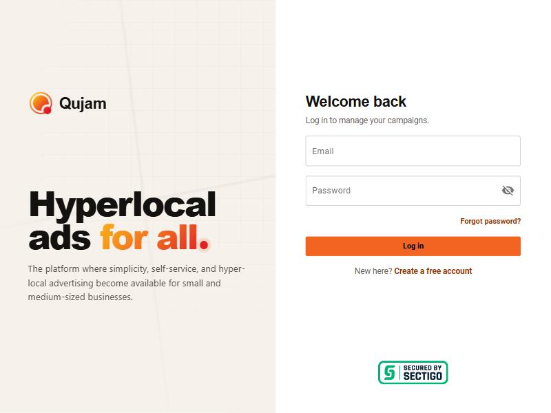
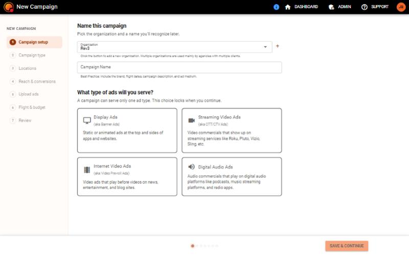

Qujam
Growing a self-serve geofencing ad platform
Qujam lets small businesses and agencies build location-targeted ad campaigns themselves, across display, streaming video, pre-roll and audio. Since September 2025 Rev3 has been Qujam's design and engineering team, and I lead the design. Payment volume grew 79% over the period.
- My role: Design lead, partner
- Team: Rev3 Labs
- Status: Live, ongoing

The problem
To keep growing, Qujam needed more ways to target and buy. The multi-step campaign builder needed to be clearer and easier to finish. And the live product had to keep running for paying advertisers the whole time we were changing it.
Hyper-Grid geofencing
The biggest thing we shipped. Geofencing usually means wrestling with coordinates or drawing shapes by hand. Hyper-Grid lets an advertiser click pre-defined half-mile grid cells on a map instead. Address search jumps to a spot without losing the grid, a counter tracks what's selected, and first-time users get a short tip and a walkthrough. It sits alongside Precision geofencing's custom shapes, and the two are explained side by side in plain language before anyone commits.

A clearer path to launch
I redesigned the campaign builder from the ground up around Hyper-Grid, as a seven-step walk: name it, pick the mode and target type, define locations, set reach, upload creative, set the flight and budget, review. Each step locks the choices that depend on it, so nobody ends up with a video ad on a display campaign or a map with no place on it. Along the way:
- Budgets with live estimates. Spend, CPM, impressions and clicks update as the number changes.
- Partner audience segments as an optional step. Anyone who doesn't need them skips it.
- Conversion tracking with a numbered setup for page-visit and button-click goals, shown only when a campaign needs it.
- Redesigned campaign cards and a guided setup wizard.

What shipped, in order
- Dec 2025. Digital audio ads, a new channel for podcast, music-streaming and radio-app audiences.
- Jan 2026. Event geofencing: reach people at an event, then retarget them for up to 30 days after.
- Apr to Sep 2026. The rebuilt campaign flow: budget UX, the setup wizard, new campaign cards.
- Jul to Oct 2026. Hyper-Grid, partner audiences and conversion tracking.
What happened
Comparing the thirteen months since Rev3 joined with the thirteen before: gross payment volume up 79%, 730 new paying customers (up 39%), 67% more advertisers spending on a typical day, and 3.2x as many campaigns delivering per day. More than 320 commits to production, and the platform never went down for it.
Vue.js on AWS with Stripe billing and a programmatic DSP integration. We also reviewed federal and state geofencing rules so the feature stays on the right side of privacy regulation.